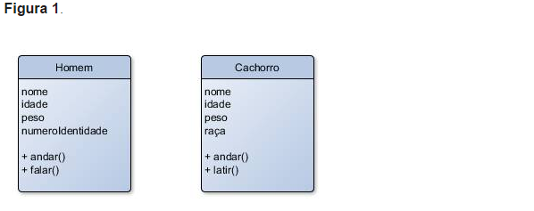

é a diferença que existe entre ele e a ocultação de informações, devido à grande confusão que sempre existiu entre estas duas definições. A ocultação de informações é considerada parte do encapsulamento, mas se fizermos uma pesquisa na internet, podemos encontrar a seguinte definição para encapsulamento: Um mecanismo da linguagem de programação para restringir o acesso a alguns componentes dos objetos, escondendo os dados de uma classe e tornando-os disponíveis somente através de métodos. Na verdade, o mecanismo para restringir o acesso a alguns dos componentes do objeto é a definição de ocultação de informações. O encapsulamento é um conceito da Programação Orientada a Objetos onde o estado de objetos (as variáveis da classe) e seus comportamentos (os métodos da classe) são agrupados em conjuntos segundo o seu grau de relação.Assim sendo, o propósito do encapsulamento é o de organizar os dados que sejam relacionados, agrupando-os (encapsulando-os) em objetos (classes), reduzindo as colisões de nomes de variáveis (dado que variáveis com o mesmo nome estarão em namespaces distintos) e, da mesma forma, reunindo métodos relacionados às suas propriedades (ou variáveis de classe). Este padrão ajuda a manter um programa com centenas ou milhares de linhas de código mais legível e fácil de trabalhar e manter.
Para facilitar a compreensão e visualização do que é o encapsulamento, vamos ver um simples exemplo. Suponha que temos um programa que trabalha com informações de seres vivos, como: homem e cachorro. Para estes dois seres vivos (objetos) existem características (atributos) em comum, como nome, idade e peso, e características (atributos) que são específicas a cada um, como número de identidade para o homem e raça para o cachorro. Há também operações comuns para ambos, como andar, ou específicas a cada um, como falar para o homem e latir para o cachorro. Uma possível representação das classes desses objetos pode ser a demonstrada na:

Figura1: Representação das classes Homem e Cachorro
Como podemos notar, estas classes encapsulam os dados relacionados a cada objeto de forma que possamos acessar cada um deles sem conflito, por estarem cada um em seu domínio. Ou seja, para saber a idade de um homem, podemos perguntar por Homem.idade e, da mesma forma, para saber a idade de um cachorro, podemos perguntar por Cachorro.idade. Os dois atributos têm o mesmo nome, mas cada um tem o seu próprio domínio. O mesmo pode ser dito sobre as operações de cada uma das classes. Isto é encapsulamento! Por outro lado, o conceito de ocultação de informações é mais do que esconder, ou ocultar os dados, é também o critério primário para a modularização de sistemas, que deve levar em consideração a ocultação de decisões de design que são susceptíveis a mudanças. Protegendo as informações desta maneira, retiramos a exigência de um conhecimento íntimo do projeto por parte dos clientes, de forma a poderem usar qualquer módulo como se fosse uma caixa preta, ou seja, sem saber o que está lá dentro, mas apenas o que entra e o que sai dela. Assim, o cliente não tem que saber ou se preocupar sobre como é feita a lógica de determinados métodos; apenas deve chamá-los e utilizar os seus resultados.